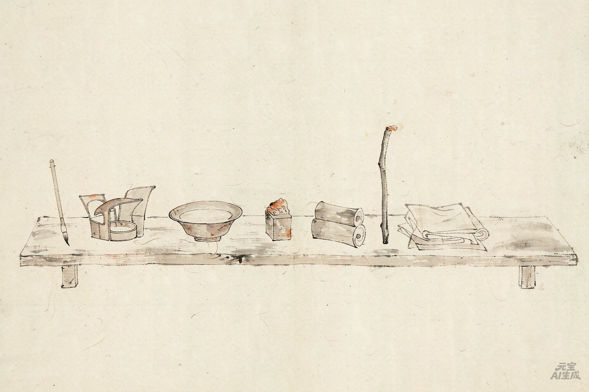
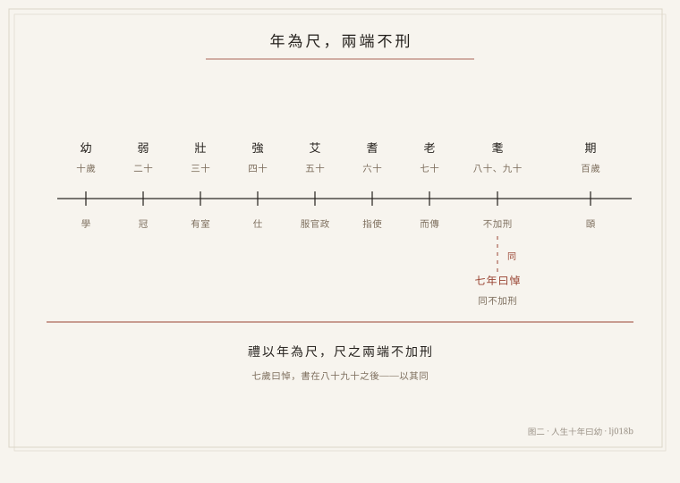

曲礼上 · 一·十九 · 第 18 课
这一节是全篇最像「制度」的一段：一张年龄表，加一套养老致事之礼。但它不是官制，是刻度——人以何时为何事，几岁该被养，几岁该被免，几岁该退。
说什么事：十年曰幼学，二十弱冠，三十壮有室，四十强而仕，五十艾服官政，六十耆指使，七十老而传，八十九十曰耄，七岁曰悼，悼与耄虽有罪不加刑，百年曰期颐；大夫七十而致事，不得谢则赐几杖、行役以妇人、适四方乘安车、自称老夫、于其国则称名；越国问焉，必告之以其制。
落在哪一层：教，兼制度。疏标此节为「明人幼而从学，至于成德，终始之行，皆遵礼制」。
为何编在此位：前面讲的是「怎样做人」，此节讲「什么时候做什么」——礼从心性落到年岁，才成了可以执行的制度。
【经】人生十年曰幼，學。二十曰弱，冠。三十曰壯，有室。四十曰強，而仕。五十曰艾，服官政。六十曰耆，指使。七十曰老，而傳。八十、九十曰耄。七年曰悼。悼與耄，雖有罪，不加刑焉。百年曰期，頤。
【经】大夫七十而致事。若不得謝，則必賜之幾杖，行役以婦人，適四方，乘安車，自稱曰老夫，於其國則稱名。越國而問焉，必告之以其制。
幼 郑注「名曰幼，时始可学也」，引《内则》「十年出就外傅，居宿于外，学书计」。疏：「自始生至十九时」通名为幼，此云「十年曰幼学」，是十岁而就业。
弱 二十成人，初加冠，体犹未壮，故曰弱。疏：「至二十九，通得名弱冠，以其血气未定故也。」
壮 三十而立，血气已定。有室，郑注「有妻也，妻称室」。疏辨不云「有妻」而云「有室」：「室者，含妾媵，事类为广。」
强 疏：「强有二义，一则四十不惑，是智虑强；二则气力强也。」
艾 疏：「年至五十，气力已衰，发苍白，色如艾也。」音义又存一读「艾，治也」。服官政，郑注《孝经》「张官设府谓之卿大夫」。
耆 贺玚：「耆，至也，至老之境也。」指使，郑注「指事使人也」。疏引《王制》「六十不与服戎，不亲学」。
传 郑注「传家事，任子孙，是谓宗子之父」。疏辨郑专言宗子之意：祭事为重，非宗子无由传。
耄 郑注「耄，惛忘也」，引《春秋传》「谓老将知，耄又及之」。
悼 郑注「悼，怜爱也」。七年，未有识虑，甚可怜爱。
不加刑 郑注「爱幼而尊老」，引《周礼·司刺》三赦（幼弱、老耄、憃愚），并及汉律「未满八岁、八十以上，非手杀人，他皆不坐」。
期颐 郑注「期犹要也，颐，养也」。疏：「人年百岁，不复知衣服饮食寒暖气味，故人子用心，要求亲之意而尽养道。」
致事 致其所掌之事于君而告老。疏辨「不云置而云致」：「置是废绝，致是与人，明朝廷必有贤代己也。」
谢 郑注「谢犹听也」，疏「谢犹听许也」。君许其退，必辞谢云「在朝日久，劬劳岁积」。
几杖、安车 几、杖皆养尊者之物；安车，坐乘之小车，「古者乘四马之车立乘，此臣既老，故乘一马小车坐乘」。
老夫 老人自称。郑注「亦明君贪贤」。疏引《左传》隐四年石碏「老夫耄矣」。
称名 于本国对君，虽老犹自称名。疏：「君虽尊异之，自称犹若臣。」
制 法度。越国问焉，必以国旧制答之。
人十岁叫幼，开始就学；二十叫弱，行冠礼；三十叫壮，有妻室；四十叫强，出仕；五十叫艾，服官政；六十叫耆，指事使人；七十叫老，传家事于子孙；八十、九十叫耄；七岁叫悼。悼与耄，虽有罪，不加刑。百岁叫期颐——只求尽养。
大夫七十岁致事。若君不许其退，是因有德而尚壮，故不听其去；那就必赐几杖，行役许妇人随行，出使四方乘安车，自称老夫；在本国对君，仍称名。他国来问政，必以其国旧制告之。
礼以年为尺，尺上有名有事；而尺之两端不加刑，尺之末段只言养。年序之后接致事，是因为「老」不只是岁数，是要有一套把人抬起来的办法。
甲·年序
第一层 「幼」的意思是「始可学」，不是「小」 郑注只六字：「名曰幼，时始可学也。」十岁之所以为一个节，不在生理，在可教。《内则》「十年出就外傅，居宿于外，学书计」——出家门、住外面、学书写计算，这是人生的第一次移交。疏又补一句：自生至十九皆名为幼。故「幼」是一段时间，而「十年曰幼学」是那段时间的起点。
第二层 二十曰弱：成人而未壮 二十加冠，是成人；仍曰弱，是体未壮。疏说得很实：「血气未定故也」，且「至二十九，通得名弱冠」。此名极妙：礼在这一年给了他成人的名分，却同时承认他还担不起成人的分量。名分先给，力气后到，中间这段就叫弱。
第三层 三十曰壮，不云「有妻」而云「有室」 疏辨此一字极细：妻者，齐也，「齐为狭局」；室者「含妾媵，事类为广」。一字之别，见当时家室之制。今日读此，不必为制度辩护，但须知经文用字的讲究——它写的是「家」这个单位，不是「配偶」这一个人。
第四层 四十强、五十艾、六十耆、七十老 四个字，四道坡。强有二义：智虑强、气力强（四十不惑在此）。艾是色，发苍白如艾；耆是境，「至老之境」；老而传，则交出去了。疏于「传」辨得最严：所传者以祭事为重，故郑注只说「宗子之父」。一个家族的记忆与祭祀，在七十岁这一年从一个人手里交到下一代。
第五层 七岁写在八十九十之后 经文序次本是十、二十……八十、九十，忽然插入「七年曰悼」，再总一句「悼与耄，虽有罪，不加刑焉」。疏解释了这处倒序：「以其同不加刑，故退而次之也。」——不是按年排，是按「同」排。全节的人道底线就这一句：最小的与最老的，犯法也不加刑。郑注引《周礼·司刺》三赦，又引汉律「未满八岁、八十以上，非手杀人，他皆不坐」。礼书里最硬的一条，给了最没有力气的人。
第六层 百年曰期颐 期，要也；颐，养也。百岁之人「不复知衣服饮食寒暖气味」，于是子之责不再是教，是「要求亲之意而尽养道」。年序以「学」始，以「养」终——一头是教，一头是养，中间才是仕与政。
乙·致事
第七层 「致」不是「置」 疏一句最见分寸：「不云置而云致。置是废绝，致是与人，明朝廷必有贤代己也。」同是离开，一个是撂下，一个是交出。交出者承认有人接得住，撂下者只承认自己不想干了。一字之差，是责任与弃职之别。
第八层 「若不得谢」的分量 谢，听许也。君许其退，还要先辞谢一句「在朝日久，劬劳岁积」——退也要谢，因为退是君恩。若不许，是因「有德尚壮」，还堪掌事。此节把「退休」写成两方的事：臣请，君留或听；不是到龄即走，也不是想留就留。
第九层 养其身：几杖、妇人、安车 既不许退，则赐几杖，行役许妇人随，出使乘安车。三样都是养身之物，不是荣衔。疏辨安车：「古者乘四马之车立乘……此臣既老，故乘一马小车坐乘。」礼不空许尊号，它给的是能坐下的车、能扶的手、能靠的几。
第十层 两副面孔：外称老夫，内称名 出使在外，自称老夫，「明君贪贤之故，而臣老犹在其朝也」；在本国对君，仍自称名，「君虽尊异之，自称犹若臣」。同一个人，在外是国的老者，在内是君的臣子。这一节最见礼的骨：尊是给的，卑是守的，两样同时成立才不坏。
第十一层 越国问焉，必告之以制 他国来问政，君虽已知道，仍须问老贤，由老贤「称国之旧制以对」。老臣在此不是顾问，是档案：一个国的法度存在老人身上。
与今日何干 今日也讲人生阶段，多用于管理与考核：几岁入职、几岁晋升、几岁退。此节的用法相反：它用来决定谁该被教、谁该被免、谁该被养、谁该退而交出。同一张年龄表，一问「你能干什么」，一问「我们该为你做什么」——礼取后者。
| 左 | 右 |
|---|---|
| 十年曰幼，学 | 二十曰弱，冠 |
| 三十曰壮，有室 | 四十曰强，而仕 |
| 五十曰艾，服官政 | 六十曰耆，指使 |
| 七十曰老，而传 | 八十、九十曰耄；七年曰悼 |
| 悼与耄，虽有罪不加刑 | 百年曰期，颐 |
| 七十致事：致非置，致是与人 | 不得谢则赐几杖、乘安车 |
| 外称老夫，内则称名 | 越国问焉，必告之以制 |

